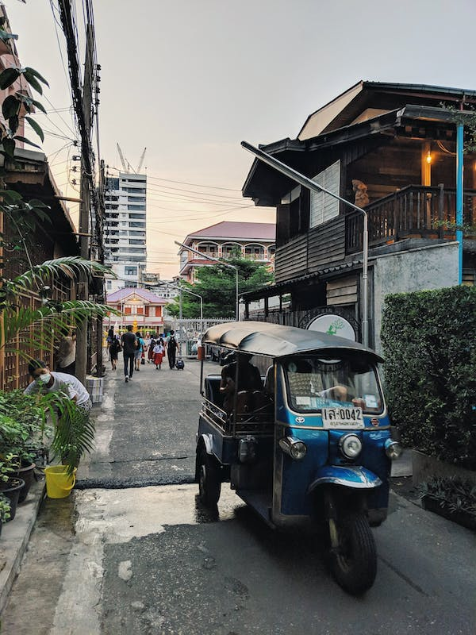

Quem nunca se perguntou antes de embarcar em uma viagem se o destino é seguro? existem diversos casos de turistas sendo passados pra trás pelos próprios moradores, então por isso vamos mostrar os 3 paises mais hospitaleiros e ao mesmo tempo divertido pros visitantes !
Japao
O Japao é um destino turístico fascinante com uma mistura única de tradição e modernidade. Com suas cidades vibrantes, paisagens deslumbrantes e cultura rica, o Japão com certeza tem muito a oferecer aos visitantes.

Tóquio é a capital e a cidade mais populosa do Japão, oferecendo uma mistura única de arranha-céus modernos e templos antigos. Visite o bairro de Asakusa para experimentar a verdadeira cultura tradicional japonesa, ou o bairro de Shibuya para experimentar a vida noturna animada e a cultura pop.
Kyoto é outra cidade incontornável, conhecida por seus templos históricos e jardins japoneses. Visite lugares como o Templo de Kinkaku-ji, o Palácio Imperial e o Jardim Zen de Ryoan-ji. Os japoneses são conhecidos por serem muito educados e respeitosos, e eles se esforçam para fazer os visitantes se sentirem confortáveis e bem-vindos.
Eles também têm uma forte tradição de hospitalidade na comida, a culinária japonesa é conhecida por sua qualidade e frescor. Os japoneses são conhecidos por serem muito detalhistas na preparação e apresentação da comida, e eles acreditam que é uma forma de mostrar respeito e generosidade para os seus convidados e por isso está no TOP 1
Italia
A Itália é um país repleto de história, arte, arquitetura e culinária incríveis. É famosa por suas cidades históricas, como Roma, com suas ruínas antigas e monumentos icônicos, como o Coliseu e o Fórum Romano; e Florença, conhecida por sua arte renascentista e arquitetura medieval. Veneza é outra cidade incontornável, com suas praças famosas, canais e gôndolas.
Eles são conhecidos por serem muito hospitaleiros e acolhedores, e gostam de fazer os visitantes se sentirem bem-vindos e confortáveis. Eles também são conhecidos por serem muito amigáveis e dispostos a ajudar os outros, e gostam de compartilhar sua cultura e tradições com os visitantes, realmente é um lugar incrível e dispensa comentários.
Tailandia 
Já a Tailândia é conhecida por suas praias deslumbrantes, templos antigos, culinária deliciosa e massagens relaxantes. Bangcoc é a capital e cidade mais populosa do país, oferecendo uma mistura única de cultura tradicional e moderna. Chiang Mai é outra cidade importante, conhecida por sua história e cultura Lanna. Ilhas como Phuket e Koh Samui são populares entre os turistas por suas praias de areia branca e mar azul cristalino.
A hospitalidade é uma característica importante da cultura tailandesa e os tailandeses são conhecidos por serem acolhedores e amigáveis. Eles têm uma expressão "Yin dee" (ยินดี) que significa "bem-vindo" e "seja feliz" e eles a usam frequentemente para saudar seus convidados. A hospitalidade tailandesa é baseada em princípios de respeito, cortesia e generosidade. Os tailandeses gostam de fazer os visitantes se sentirem bem-vindos e confortáveis e eles são conhecidos por serem muito prestativos e dispostos a ajudar.